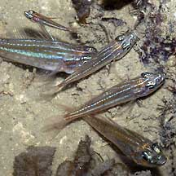
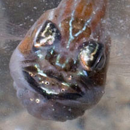

| Phylum Chordata
> Subphylum Vertebrate > fishes |
Cardinalfishes
Family Apogonidae
updated
Sep 2020
if you
learn only 3 things about them ...
 They have large eyes, mouth and scales. Some are colourful. They have large eyes, mouth and scales. Some are colourful.
The male broods the eggs in his mouth.
Don't
touch them, some can give a nasty bite! |
|
Where
seen? These big-eyed fishes are commonly seen on many of
our shores. They are small and often well hidden in pools. They swim
about more actively at night than during the day.
What are cardinalfishes? Cardinalfishes
belong to Family Apogonidae. According to FishBase,
the family has 22 genera and 207 species, most below 10cm, seldom
larger than 20cm. They are found in all the oceans including some
freshwater species in tropical Pacific Islands. Most species are reef-dwellers.
Features: 3-5cm. These small fishes
have elongated bodies and large eyes, a large mouth and large scales.
They have angular dorsal fins that are separated into two parts. Cardinalfish
are often handsomely patterned in stripes or spots. Their common name
comes from the red colour of many of the species, although they come
in all colours from yellow to brown and blue. Often found in small
groups, sheltering among the seagrasses or other hiding places during
the day. |

Sometimes found in groups.
Pulau Hantu, Nov 03
|

Brooding eggs in the mouth.
Pulau Semakau, Oct 11 |

Brooding young in the mouth.
Pulau Semakau, Oct 11 |
Cardinalfish
babies: Cardinalfishes are mouth brooders. The fertilised egg mass is kept
in the mouth until they hatch in several days' time. Usually it is
the male that undertakes this task, but in some species both the male
and female do this.
What
do they eat? As a group they eat a wide variety from small
fishes, crabs, prawns and other tiny animals including plankton. Most
are more active at night.
Human uses: Some species of cardinalfish
like the Five-lined Cardinalfish (Cheilodipterus quinquelineatus)
and Orbicular cardinalfish (Sphaemaria
orbicularis) are popular in the live aquarium trade. Some are
being successfuly bred in captivity. |
| Some Cardinalfishes
on Singapore shores |
|
Family
Apogonidae recorded for Singapore
from
Heok Hee Ng and Kelvin K. P. Lim. 2014. A preliminary checklist of the cardinalfishes (Actinopterygii: Gobiiformes: Apogonidae) of Singapore.
+Other additions (Singapore Biodiversity Records, etc)
| |
Apogon
crassiceps
Apogonichthyoides melas (Black cardinalfish)
Apogonichthyoides niger
Apogonichthyoides timorensis
Archamia bleekeri
Cheilodipterus artus
Cheilodipterus macrodon
Cheilodipterus quinquelineatus
Cheilodipterus singapurensis
Fibramia amboinensis
Fibramia lateralis
+Fibramia thermalis (Masked cardinalfish)
Fowleria variegata (Variegated cardinalfish)
Jaydia lineata
Jaydia truncata
Lepidamia kalosoma
Nectamia savayensis
Nectamia similis
Ostorhinchus cavitensis (Cavite cardinalfish)
Ostorhinchus chrysopomus
Ostorhinchus compressus
+Ostorhinchus cookii (Cook's cardinalfish)
Ostorhinchus
endekataenia (Candystripe cardinalfish)
Ostorhinchus fasciatus
+Ostorhinchus fleurieu
Ostorhinchus
margaritophorus (Chequered cardinalfish)
+Ostorhinchus nanus
Ostorhinchus novemfasciatus
Ostorhinchus pleuron
Ostorhinchus urostigmus
+Ostorhinchus wassinki (Wassink’s cardinalfish)
Pristicon rhodopterus
Pristicon trimaculatus
Pseudamia amblyuropterus
Siphamia tubifer
Sphaeramia nematoptera (Pajama cardinalfish)
Sphaeramia orbicularis (Orbicular
cardinalfish)
Taeniamia fucata (Orange-lined cardinalfish)
+Taeniamia macroptera (Duskytail cardinalfish)
Yarica hyalosoma
Zoramia leptacantha |
|
Links
References
- Daisuke Taira. 30 November 2020. Tiny cardinalfish, Ostorhinchus nanus, off Kusu Island. Singapore Biodiversity Records 2020: 207-208. The National University of Singapore.
- Tan Heok Hui & Kelvin K. P. Lim. 27 March 2020. New record of the Cook’s cardinalfish (Ostorhinchus cookii) in Singapore. Singapore Biodiversity Records 2020: 39 ISSN 2345-7597
- Daisuke Taira. A recent record of the masked cardinalfish in Singapore. 31 May 2018. Singapore Biodiversity Records 2018: 46-47 ISSN 2345-7597. National University of Singapore
- Marcus F. C. Ng. A variegated cardinalfish at Sisters Islands. 31 January 2018. Singapore Biodiversity Records 2018: 16 ISSN 2345-7597. National University of SingaporeJ
- Jeffrey K. Y. Low & Kelvin K. P. Lim. 27 May 2016. New Singapore record of Wassink’s cardinalfish, Ostorhinchus wassinki. Singapore Biodiversity Records 2016: 75
- Jeffrey Low and Koh Kwan Siong. 31 March 2016. Cavite cardinalfish from Pulau Hantu, Ostorhinchus cavitensis. Singapore Biodiversity Records 2016: 54
- Kelvin K. P. Lim, Koh Kwan Siong & Heng Pei Yan. 29 January 2016. Cardinalfishes of the genus Taeniamia off Pulau Hantu: Orange-lined cardinalfish, Taeniamia fucata; Duskytail cardinalfish, Taeniamia macroptera. Singapore Biodiversity Records 2016: 18-19
- Koh Kwan Siong & Kelvin K. P. Lim. 8 May 2015. New record of flower cardinalfish in Singapore. Singapore Biodiversity Records 2015: 54.
- Heok Hee Ng and Kelvin Kok Peng Lim. October 2014. A preliminary checklist of the cardinalfishes (Actinopterygii: Gobiiformes: Apogonidae) of Singapore.
Check List 10(5):1061-1070 DOI: 10.15560/10.5.1061
- Jeffrey K. Y. Low. 2013. More noteworthy fishes observed in the Singapore Straits. Nature in Singapore, 6: 31–37.
- Heok Hee Ng and Kelvin K. P. Lim. 2014. A preliminary checklist of the cardinalfishes (Actinopterygii: Gobiiformes: Apogonidae) of Singapore. Check List 10(5): 1061–1070, 2014
- Heng Pei Yan & Kelvin K. P. Lim. 15 November 2013. Some noteworthy reef fishes at Pulau Hantu. Singapore Biodiversity Records 2013: 65-67: Wolf cardinalfish, Cheilodipterus artus;
Cavite cardinalfish, Ostorhinchus cavitensis;
Pajama cardinalfish, Sphaeramia nematoptera.
- Chou, L.
M., 1998. A
Guide to the Coral Reef Life of Singapore. Singapore Science
Centre. 128 pages.
- Wee Y.C.
and Peter K. L. Ng. 1994. A First Look at Biodiversity in Singapore.
National Council on the Environment. 163pp.
- Davison,
G.W. H. and P. K. L. Ng and Ho Hua Chew, 2008. The Singapore Red
Data Book: Threatened plants and animals of Singapore.
- Allen, Gerry,
2000. Marine
Fishes of South-East Asia: A Field Guide for Anglers and Divers.
Periplus Editions. 292 pp.
- Kuiter, Rudie
H. 2002. Guide
to Sea Fishes of Australia: A Comprehensive Reference for Divers
& Fishermen
New Holland Publishers. 434pp.
- Lieske,
Ewald and Robert Myers. 2001. Coral
Reef Fishes of the World
Periplus Editions. 400pp.
|
|
|